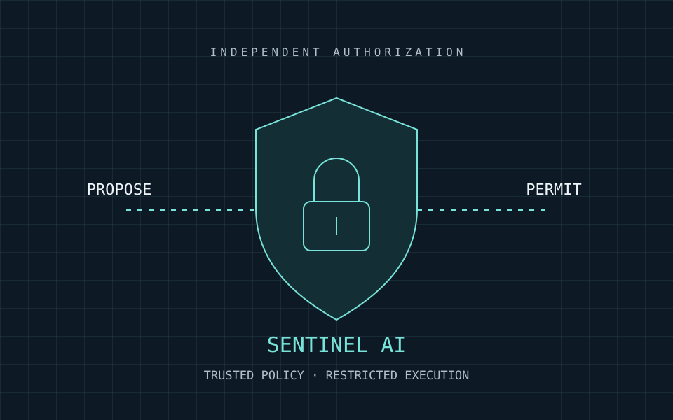

Architecture illustration01 / AI Security · Systems Engineering
Sentinel AI / SentinelOS
Your agent can propose. Only policy can permit.
A local-first Rust security gateway that checks supported agent actions against trusted contracts, Cedar policies, and human approvals before execution.
Open-source research · Release candidate